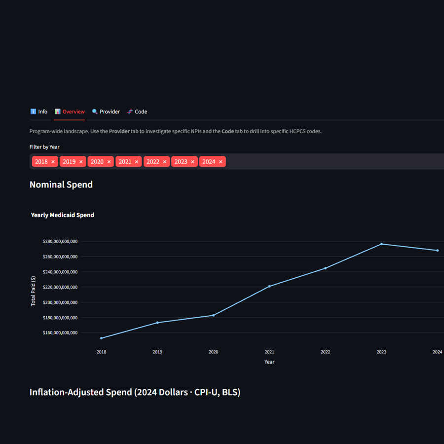
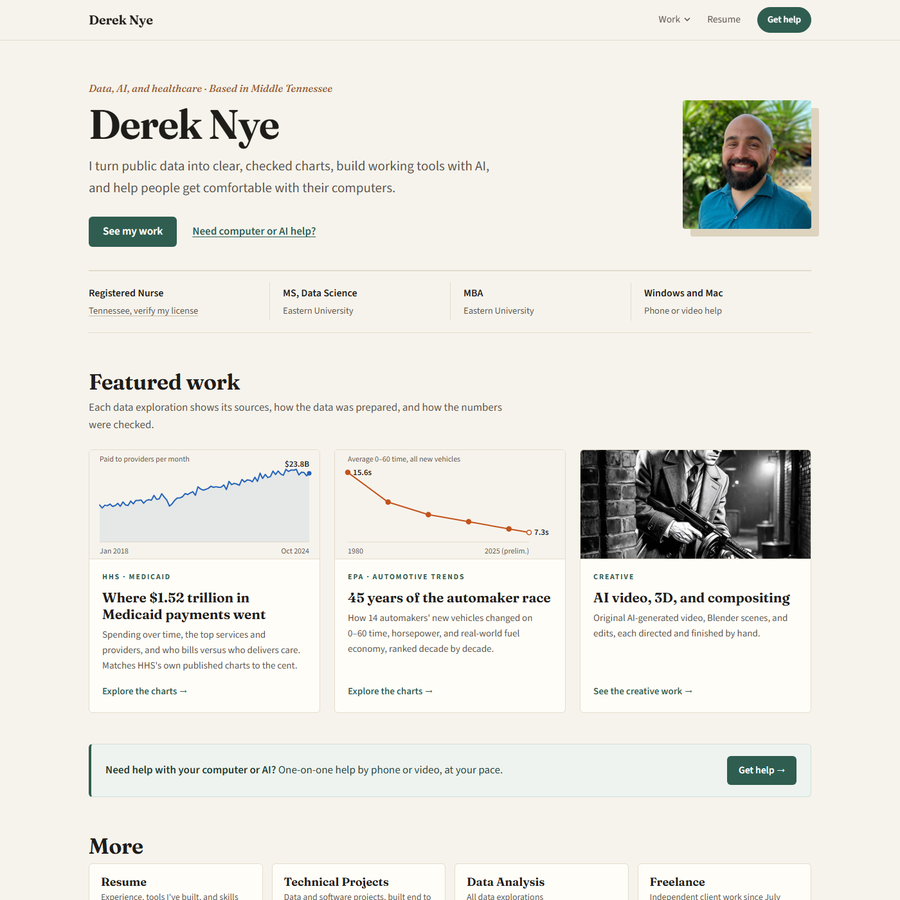
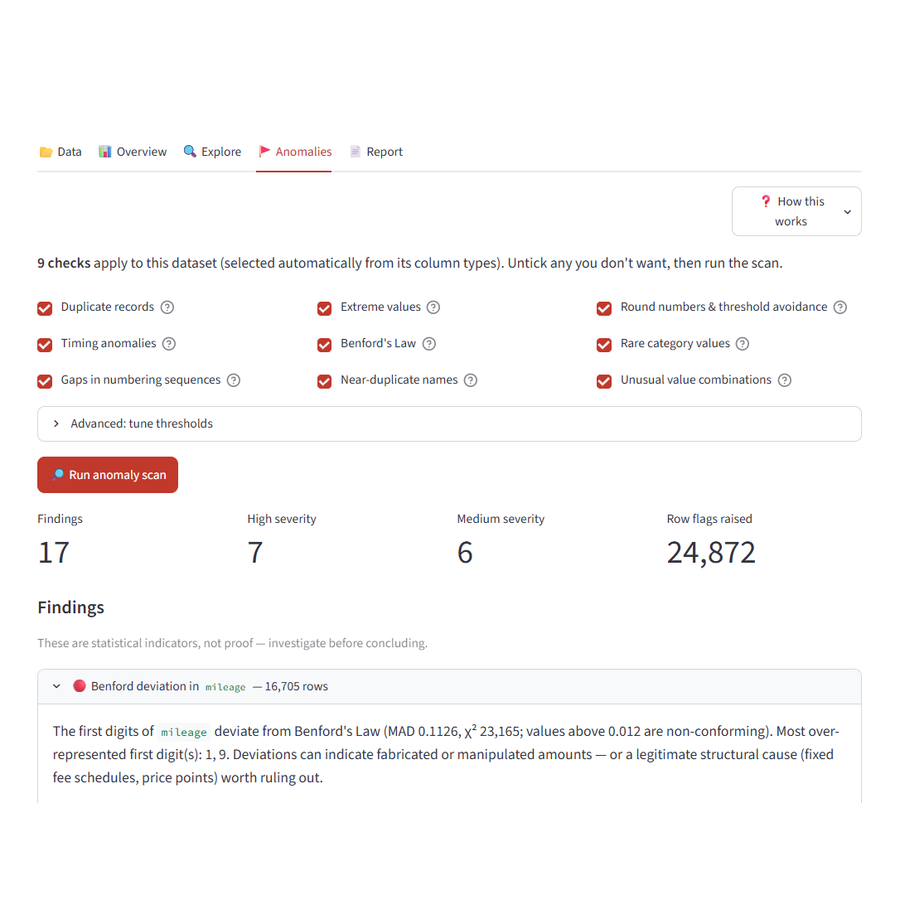
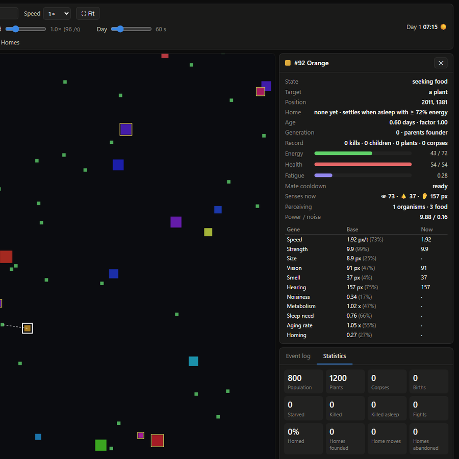
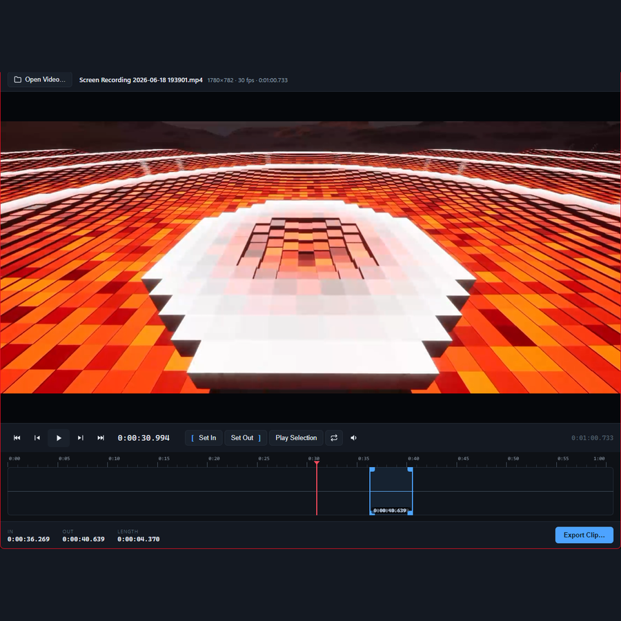
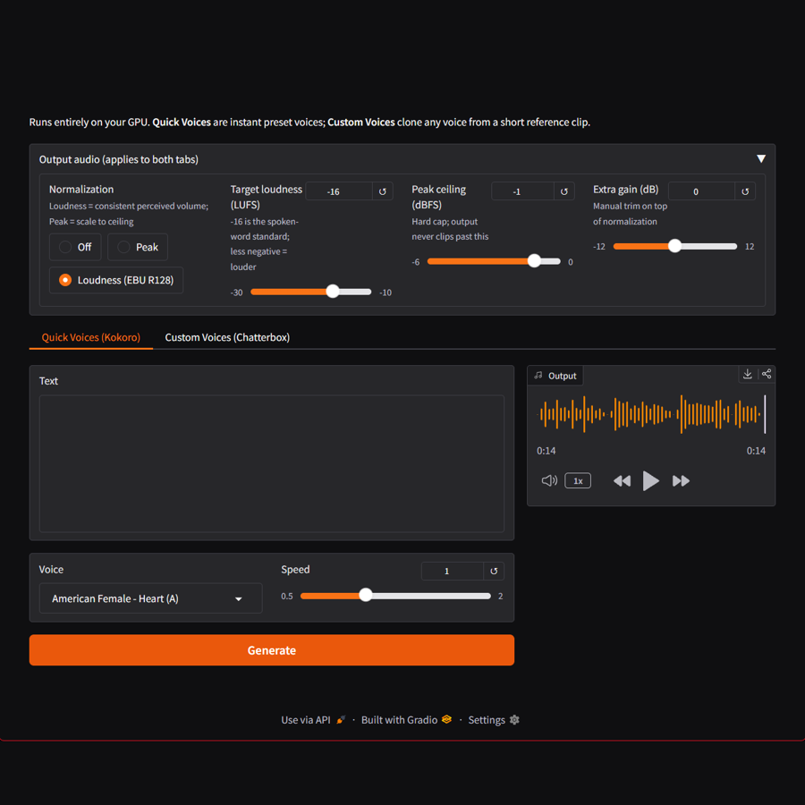

Selected data and software projects. Analysis tools, detection platforms, and utilities built end to end.

Python, DuckDB, Streamlit, Plotly
The same dataset is charted on the Data Analysis page.

HTML, CSS, JavaScript, Python, DuckDB, Git, Cloudflare Pages

Python, DuckDB, pytest

JavaScript, HTML Canvas, no dependencies
Run it live · Source (MIT) · runs in your browser, best on a desktop
C++20, JUCE, CMake · Windows desktop app
A prototype I use myself, started October 2026. Six of seven planned milestones are built.

JavaScript, Electron, FFmpeg

Python, Gradio, PyTorch